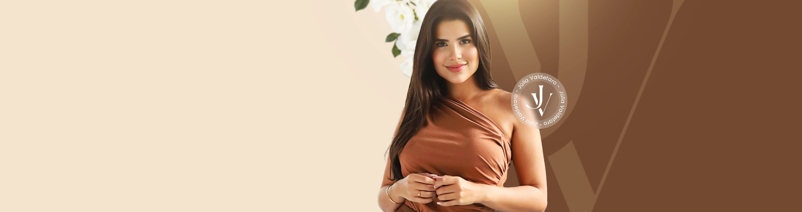

Paleta de cores
Medida no navegador: fundos ponderados pela área ocupada, textos pela quantidade de caracteres. Destaques reúnem cores saturadas e fundos de botão.
Fundos
#FFF5E8
Fundo · 53.9%
rgb(255, 245, 232)
rgb(255, 245, 232)
#F3E2CE
Fundo · 41.0%
rgb(243, 226, 206)
rgb(243, 226, 206)
#FFFFFF
Fundo · 4.9%
rgb(255, 255, 255)
rgb(255, 255, 255)
#734930
Fundo · 0.2%
rgb(115, 73, 48)
rgb(115, 73, 48)
Textos
#553724
Texto · 59.4%
rgb(85, 55, 36)
rgb(85, 55, 36)
#3F3638
Texto · 34.3%
rgb(63, 54, 56)
rgb(63, 54, 56)
#FFFFFF
Texto · 6.3%
rgb(255, 255, 255)
rgb(255, 255, 255)
Destaques
#553724
Destaque
rgb(85, 55, 36)
rgb(85, 55, 36)
Gradientes
linear-gradient(164deg, rgb(115, 73, 48) 0%, rgb(139, 101, 71) 100%)linear-gradient(204deg, rgb(166, 123, 88) 0%, rgb(115, 73, 48) 100%)linear-gradient(160deg, rgb(115, 73, 48) 26%, rgb(139, 101, 71) 100%)Tipografia
Poppins · Aa Bb Cc 0123
100% do texto · Se a sua cabeça não desliga, esta página é para você.Escala usada (desktop 1440px)
| Tamanho | Peso | Família | Amostra |
|---|---|---|---|
| 41px | 600 | Poppins | Texto de exemplo |
| 35px | 600 | Poppins | Texto de exemplo |
| 34px | 600 | Poppins | Texto de exemplo |
| 29px | 600 | Poppins | Texto de exemplo |
| 24px | 600 | Poppins | Texto de exemplo |
| 24px | 300 | Poppins | Texto de exemplo |
| 22px | 600 | Poppins | Texto de exemplo |
| 20px | 600 | Poppins | Texto de exemplo |
| 18px | 300 | Poppins | Texto de exemplo |
| 18px | 400 | Poppins | Texto de exemplo |
Mobile (390px): 39px/600, 37px/600, 30px/600, 26px/600, 25px/600, 22px/600, 20px/600, 18px/500 · H1 no mobile: sem h1 semântico
Tags
| Tag | Família | Tamanho | Peso | Altura de linha | Espaçamento | Caixa | Cor |
|---|---|---|---|---|---|---|---|
| <h2> | Poppins | 16px | 300 | 22.4px | normal | none | #553724 |
| <h3> | Poppins | 24px | 600 | 31.2px | normal | none | #3F3638 |
| <p> | Poppins | 15px | 300 | 21px | normal | none | #3F3638 |
Botões
Recriados com os estilos computados reais. Efeitos de hover e animação não aparecem aqui; veja a seção de animações.
Agende Sua Sessão Agora
fundo #00000000 · texto #FFFFFF · raio 36px 2px · padding 22px 40px · 18px/400 none · 3x na páginaCards e containers
Card (4x)
Terapia Individual Um espaço seguro e acolhedor para você explorar suas emoções, entender
raio 8px · sombra none · borda 0px none rgb(51, 51, 51) · 270x354pxBordas, raios e sombras
8px
4px
6px
36px 2px
12px
20px
Sombras
Sem sombras relevantes.
Espaçamentos
- Largura do conteúdo mais comum: 1140px
- Padding vertical das seções (topo/base): 0px/0px (9x)
- Gaps mais usados (flex/grid): 20px, 15px, 30px, 37px, 40px, 10px
- Altura total da página: 4455px em 9 seções
Estrutura e ritmo de cores das seções
Cada faixa é uma seção de topo, com altura proporcional e a cor ou imagem de fundo real.
1. hero 70px · padding 0px/0px
2. servicos Recupere Seu Bem-Estar Emocional com Terapia Individual 680px · padding 0px/0px
3. como-funciona Sua Jornada de Autoconhecimento Começa Aqui... 571px · padding 0px/0px
4. sobre Como Funciona? 763px · padding 0px/0px
5. prova-social Quem é Júlia Valdetaro? 680px · padding 0px/0px
6. localizacao Depoimentos 860px · padding 0px/0px
7. faq Onde estamos? 237px · padding 0px/0px
8. rodape FAQ 518px · padding 0px/0px
9. Todos os direitos reservados © 2024 Júlia Valdetaro 76px · padding 0px/0px
Animações, ícones e bibliotecas
- Keyframes próprios: nenhum keyframe próprio
- Animações de entrada do Elementor: nenhuma
- Classes de scroll reveal da casa: scroll-bottom, scroll-left, scroll-right, scroll-top
- Ícones: 18 SVG, 0 ícones de fonte
- Bibliotecas e tags detectadas: ga4, gtm, jquery, lottie, swiper
Snippets da biblioteca presentes nesta página
Imagens do site


